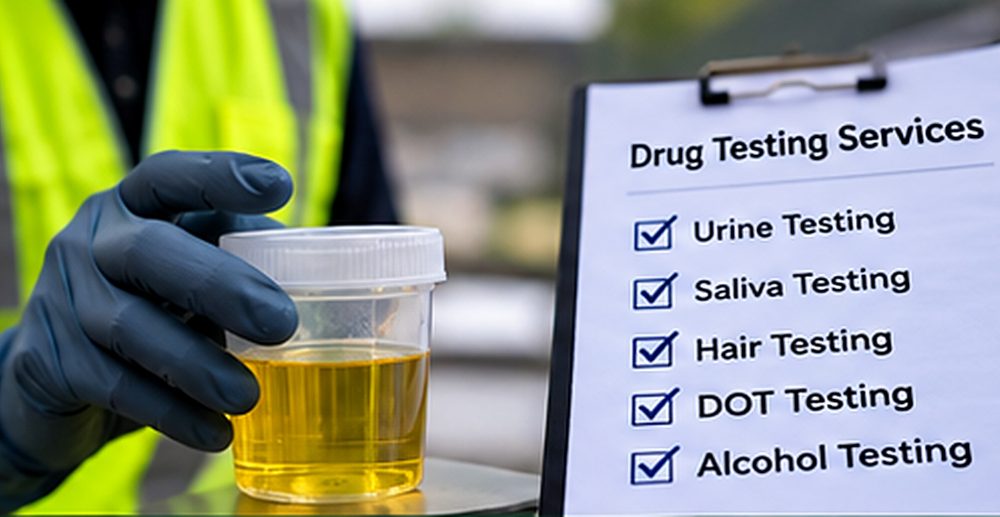

Non-DOT screening✳
5-Panel Urine Drug Test
Common five-panel urine drug screening option. Confirm panel requirements before ordering.
PRICETo be confirmed
Find the appropriate screening method or workplace program.

Read about each type, then choose the right test for your requirement.
Versatile screening options for employment and personal requirements.
View service ↗LONGER-WINDOW SCREENINGA different view of substance-use history for eligible programs.
View service ↗NON-INVASIVE TESTINGConvenient specimen collection for approved screening needs.
View service ↗BREATH & LAB TESTINGSelect the right alcohol testing method for your requirement.
View service ↗REGULATED PROGRAMSTesting pathways for federally regulated safety-sensitive roles.
View service ↗EMPLOYER SOLUTIONSTesting solutions for hiring, safety, and ongoing screening.
View service ↗TIME-SENSITIVE EMPLOYER INTAKEOrganize the key information needed after a workplace incident.
View service ↗Choose a test to add to your cart. Prices and availability must be confirmed before payment.
Common five-panel urine drug screening option. Confirm panel requirements before ordering.
Expanded urine panel commonly considered for employment and personal screening.
Broader urine screening selection for specific non-DOT program needs.
Hair specimen screening for a longer retrospective detection window.
Additional panel coverage for qualifying hair drug screening requests.
Non-invasive oral fluid collection for eligible testing programs.
Oral fluid screening with additional analyte options subject to availability.
Breath alcohol screening for eligible workplace or personal needs.
Laboratory-based alcohol metabolite screening option.
Drug test selection for eligible DOT-regulated testing events.
Alcohol testing request for a qualifying DOT-regulated event.
Screening selection for employer hiring workflows.
Initiate a time-sensitive workplace drug and/or alcohol testing request.